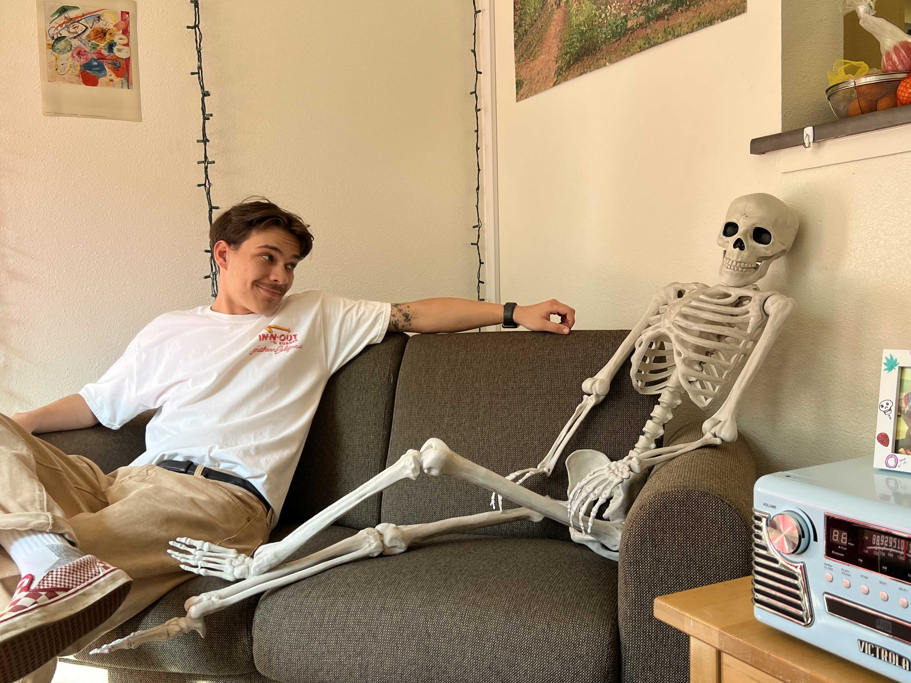

Lab 3: File Structures - Task 3
This Lab is about how to structures files within HTML. How to put in headers, paragraphs, images, and being able to link to other HTML.
Challenges
I found myself getting pretty frusterated with this assignment. I felt like it has been taking me SO long to complete each task. I couldn't figure out how to put in an image when it is in a folder. I kept trying but it would not load on the website, only showing a image icon.
Results
I now have two HTML websites! Pretty neat I'd say. I could eventually use this to create an online portfolio for my stage lighting designs.
